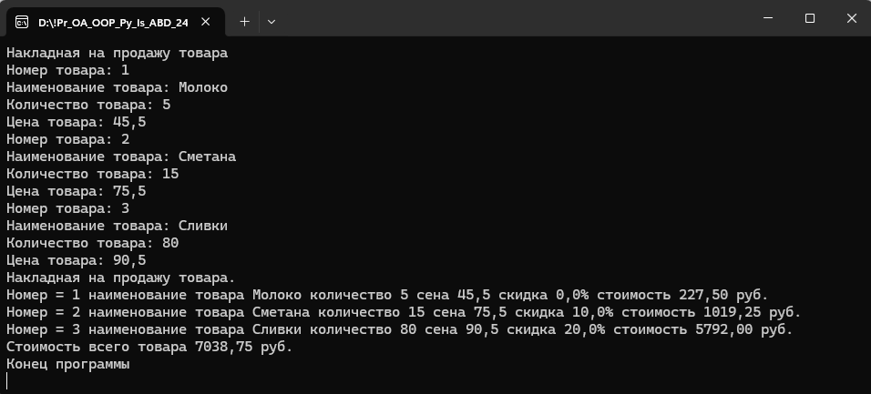

| Контрольная работа 8. Создание класса для формирование накладной продажи товара. | ||
| Назад | ||
|
Задача 1. Сформировать класс оформления накладной на продажу товара. В классе использовать динамический массив Класс ArrayList. 1. В классе сформировать поля: наименование товара, единица измерения, количество, цена, скидка 2. Заполнение накладной с клавиатуры. Указать количество записей в накладной (от 1 до 3) 3. Организовать проверку заполнения палей; количество от 1 до 100. 4. Организовать скидки при покупке товара от 1 - 10 - скидки нет, от 11 до 20 - скидка 20% и шт. 21 до 100 - скидка 30% более 100 единиц вывод сообщения о ошибке 5. Оформить печать накладной с указание: номер позиции покупки, наименование товара, количество, цена, скидка, стоимость , общая стоимость покупки товара по накладной. Пример вывода информации о формировании накладной
 |
||
| Конспект подготовлен Бакулиным А. М. 2022 год. | ||